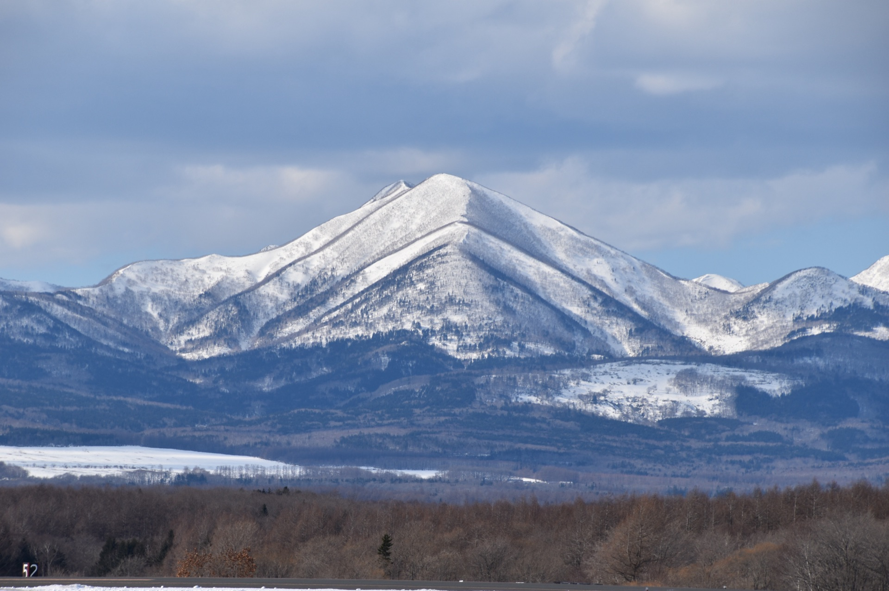
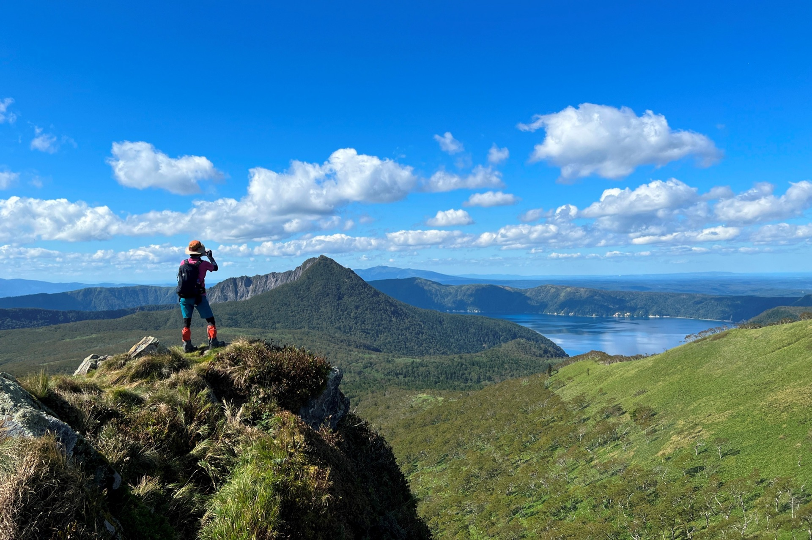
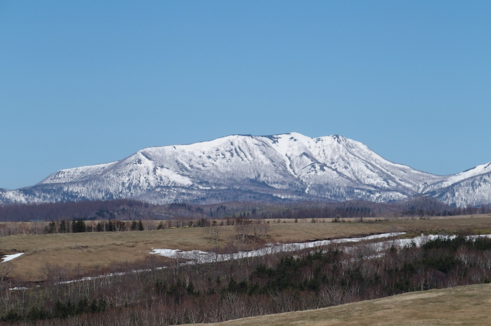

武佐岳 1,005m
中標津町の北西にそびえる、地域に親しまれてきた山。 笹刈り・倒木処理・標識補修など、登山シーズン前の春に整備を実施しています。
南知床の穏やかな山々を、ゆるやかに、長く楽しむ。
山と親しむ暮らしを共有する仲間の集まりです。
南知床山岳会（SSAC: South Shiretoko Alpine Club）は、 2023年に設立された、北海道標津郡中標津町を拠点とする山岳会です。 YAMAP を通じて知り合った仲間が中心となって始まりました。
私たちは「ザ・山岳会」のような厳格な組織を目指していません。 南知床の山々は決して険しく高い山ばかりではなく、日常の延長として親しめる山が多いからです。 登山も、トレランも、日々の運動も。 山と暮らしを重ねるライフスタイルを、仲間と一緒に楽しんでいます。
メジャーな山ではないからこそ、一人で行くのは不安だという方も多いはずです。 みんなで集まって、わいわい山に行く。それが私たちのスタイルです。

南知床山岳会が生まれたきっかけは、標津岳の登山道でした。 先人が守ってきた登山道は、地元主体の整備が数年途絶えただけで、 わずか2年ほどで道が見えなくなってしまいました。 実際に遭難事故も起きました。
「このままでは、山が忘れられてしまう」── 先人が残してくれた山を、次の世代へ手渡したい。 その想いが、私たちが集まった理由のひとつです。
現在、南知床山岳会は 武佐岳と標津岳の2座の登山道整備を、 中標津町や地域の方々と協力しながら続けています。
年に数回の定例イベントと、メンバー同士の声かけによる山行が中心です。
最新の活動の様子は、Facebook と Instagram で発信しています。
メンバーが個人で山に行く際、「いつ、どこへ行きます。一緒にどうですか」と声をかけ合っています。 仲間と一緒に登る機会が、日常的にあるのが本会の特長です。
南知床山岳会は、武佐岳と標津岳の2座の登山道整備を、
中標津町と協力しながら毎年実施しています。
ボランティアでの参加もお待ちしています。

中標津町の北西にそびえる、地域に親しまれてきた山。 笹刈り・倒木処理・標識補修など、登山シーズン前の春に整備を実施しています。

地元主体の整備が一時途絶え、わずか2年で道が見えなくなりかけた山。 本会の原点となる山であり、毎年丁寧に整備を続けています。
※ 整備活動・山開きの様子の写真は、本年の活動から順次掲載していきます。
南知床山岳会が整備・山開きを行う2座をご紹介します。
年代を問わず、幅広い層が活動しています。
山が好きな方、興味のある方であればどなたでも歓迎します。
本格装備は不要ですが、運動に適した服装・登山に適した靴・ザック（リュック）はご準備ください。 普通のランニングシューズは滑りやすく危険です。
何を揃えればよいか分からない方も気軽にご相談ください。 会員に中標津のアウトドアショップ 「コスモサイエンス」 の店主がおり、装備のアドバイスができます。
年会費はかかりません。
毎週のヘビーな活動でなくて構いません。 ただし、会からのイベント案内には、できる範囲でお返事をお願いします。
下記のお問い合わせフォームよりご連絡ください。
安全な山行のため、会では次の取り組みを推奨しています（強制ではありません）。
初めて行く山については、ベテラン会員から 「こういう山だよ」 という事前のアドバイスも行っています。
入会に関するお問い合わせやご質問は、下記フォームよりお気軽にご連絡ください。